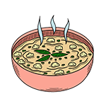

Maya Erskine — Founder
At the stove since 2007. Formerly at coastal kitchens in Copenhagen and Whitby. Writes the menu at the market.
Fire & Bread

Chefer began as a Sunday table for neighbours and never quite stopped. Eight seats, one long oak board, an open hearth you can feel from the doorway. We still write the menu after the market walk.
No freezer stock. No overnight hold. If it arrives before noon, it has a chance to reach the plate. If not, we cook something else.
"Memory is the most honest seasoning. We try to cook so you remember where you were, not just what you ate."
Every dish starts with a walk: market row, harbour wall, a field edge if the season allows. We carry what we can in two baskets. Back at the atelier the fire is already lit. The rest is trimming, tasting, asking whether the plate needs anything else — and often deciding it does not.

Fire · Harvest · HandsWe serve, pour, and cook in the same room you eat in. No pass, no expo — just us.
"You eat five metres from where it is cooked. That changes the plate."
— Maya on the room
"One table, so we learn your name before the first course lands."
— Jonah on eight seats
"If the leaf was picked this morning, we do less to it. That is the whole job."
— Sora on vegetables
Doors at six. No music you have to talk over. Courses arrive when they are ready, not when a ticket says so.
Morning market, harbour, field edge. We write the menu after we have carried the ingredients home.
Coal lit early, bread in, stocks whispering. Hands keep the fire honest.
One long board, eight chairs, plates carried two at a time and told properly.